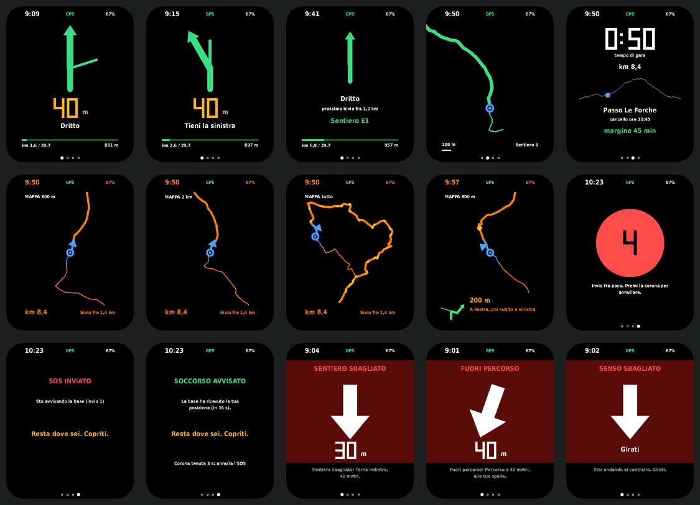

1 · Carica il firmware
- Apri questa pagina sul PC con Chrome o Edge (Safari e i telefoni non possono scrivere sull'orologio).
- Collega l'orologio con il cavo USB-C.
- Premi il pulsante qui sotto e scegli la porta dell'orologio (di solito «USB JTAG/serial debug unit»).
- Alla prima installazione accetta di cancellare il dispositivo; poi attendi la fine (un paio di minuti).
Versione del firmware: …
Se l'orologio non si fa trovare: tieni premuto il pulsante BOOT mentre colleghi il cavo, poi riprova.
2 · Configura
Con l'orologio ancora collegato, dal PC (serve Python):
pip install meshtastic- nella cartella
orologio/configdel sito:python3 prepara.py --orologi 1-5(una volta sola: crea il canale SRM e la sua chiave inprivato/) meshtastic --configure privato/orologio-001.yaml
Il nome «SRM pettorale 001» dice all'orologio il suo pettorale: è quello che compare negli SOS.
3 · Come si usa
- Schermo: si accende da solo ai bivi e negli errori; tocco = pagina dopo (Guida · Mappa · Gara · SOS).
- Corona premuta: modalità mappa (tocco = scala), di nuovo per chiuderla.
- Corona tenuta 2-3 secondi: SOS, con 5 secondi per annullare; poi ripete l'invio finché la base conferma.
- Vibrazioni: una lunga = bivio fra 200 m · due = al bivio · tre brevi = ora · tre lunghe = errore.

Le schermate sono quelle prodotte dal programma dell'orologio fatto girare sul PC con i percorsi di prova.